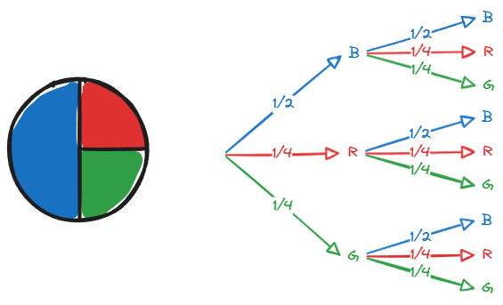

Stochastik
1. Grundlagen
Zufallsexperiment: Würfel
Ergebnisse: \(E=\{1,2,3,4,5,6\}\)
Ereignisse:
- A:
Die Augenzahl ist gerade\(A=\{2,4,6\}\) - B:
Die Augenzahl ist kleiner als 3\(B=\{1,2\}\)
Mächtigkeit (auch: Kardinalität) der Menge: \(|E|=6\)
Beispiel: \(P(A)=\frac{|A|}{|E|}=\frac{3}{6}=50\%\)
Ereignisse verknüpfen:

Schnittmenge:
Vereinigungsmenge:
Komplement:
Differenzmenge:
Komplementärregel

Laplaceregel
Gilt für Experiment, wo jedes Ergebnis die gleiche Wahrscheinlichkeit hat, zum Beispiel ein Würfel.
Beispiel:
- A:
Es fällt eine 1,3,5 oder 6 - B:
Es fällt eine ungerade Zahl
2. Baumdiagramme

Pfad-Multiplikationsregel (entlang des Pfades):
Erst blau dann rot.
Pfad-Additionsregel (mehrere Pfade):
erst blau oder grün, dann blau
Dreifacher Münzwurf
Ereignis:
"Bei dreifachem Münzwurf mindestens einmal Kopf"
Wahrscheinlichkeit:
Merksatz:
'mindestens ein Mal' heißt Eins minus kein Mal.
3. Urnenmodell ohne Zurücklegen
Wichtig Hierbei ist, dass die Wahrscheinlichkeit sich nach jeder Ziehung ändert!
4. Kombinatorik
Permutation
Eine Permutation ist eine Anordnung von Objekten in einer bestimmten Reihenfolge.
Formel:
OHNE Zurücklegen und MIT Beachtung der Reihenfolge:
MIT Zurücklegen und MIT Beachtung der Reihenfolge:
OHNE Zurücklegen und OHNE Beachtung der Reihenfolge:
und
5. Bedingte Wahrscheinlichkeit
Satz von Bayes
Schreibweisen mit der gleichen Bedeutung:
gesprochen: Die Wahrscheinlichkeit von A unter der Bedingung, dass B bereits eingetroffen ist.